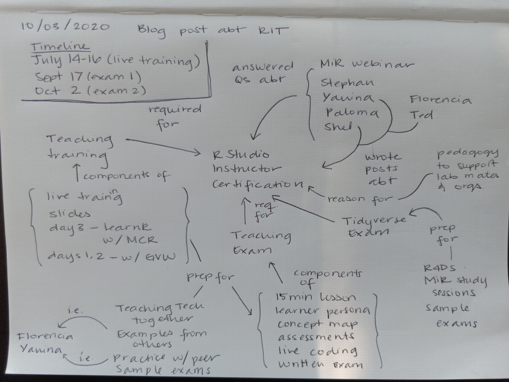

February 12th, 2021 was Greg Wilson’s last day at RStudio. This means he is no longer running the instructor training program, so the future of the program is unclear. You may want to contact traininginstructor@rstudio.com with any specific questions.
You can also jump down in this blog post to Teaching resources to find a consolidated list of materials previously taught as part of the RStudio certification program, in addition to some related resources (thanks to Yanina for adding to this list!).
Lastly, you may want to consider becoming certified through The Carpentries. Yanina Bellini Saibene (@yabellini) and Dorris Scott (@Dorris_Scott) are a couple of RStudio instructors that have also been certified through The Carpentries.
Why did I get trained?
Teaching R was not something I thought I’d ever get into but a couple of reasons were nudging me towards getting some formal training.
I wanted to be able to…
- …support my coworkers in their own data analysis projects and be better prepared to introduce R to undergraduate students coming through and hoping to apply learned skills elsewhere
- …incorporate data analysis into the research efforts of my local organizing collective, and was feeling ill-equipped to lead our group. Most collective members have very little experience with data analysis, if any, and none have programming experience
After the RStudio Instructor training I can confidently say I feel prepared for both of these challenges!
Choose your own adventure
- Jump down to a panel on the RStudio Certification hosted by the MiR Community
- Jump down to a list of teaching exam examples and Tidyverse sample exam solutions shared openly by other instructors
- Keep reading to find out what I learned before I decided to pursue the certification and what the certification experience was like for me.
Deciding to become certified
Asking around
In the interest of making an informed decision, I asked a few instructors to share a bit about their experience with the certification process before I made the commitment.
- üá∫üá∏ Stephan Kadauke is a colleague I met through the Children‚Äôs Hospital of Philadelphia R User group. Specifically at an Intro to Machine Learning with the Tidyverse workshop led by Alison Hill.
I met these wonderful people through the R-Ladies Global Slack workspace:
- üá¶üá∑ Yanina Bellini Saibene shared her experience with this process in her blog post Obtaining RStudio certification. A shared path.
- üáßüᥠüá≥üá± Paloma Rojas-Saunero shared her view as a Ph.D. candidate with experience teaching R in R-Ladies workshops and as a teaching assistant in biostatistics courses.
- üá∞üá™ Shelmith Kariuki speaks to her experience in her blog post The RStudio Certification Process.
Here’s what folks had to say!
Highlights are shared with the authors’ permission and my gratitude to them.
What made you want to pursue the certification?
One, it gave me incentive to read R for Data Science cover to cover which I had been meaning to do for a while. Two, I’m teaching R and the certification gives me some gravitas to do that. Three, it forced me to critically think about cognitive load theory, concept mapping, and lesson development, all of which are super useful when you actually have to develop lessons. –Stephan
I pursued the certification for a few reasons. First because I am really enthusiastic about teaching and I love the tidyverse, so I wanted to find opportunities of teaching it outside my university. Second because I feel that RStudio is growing so fast on teaching materials that sharing with other instructors would be a great way to always keep updated. And last but not least, I was also encouraged by the idea of going through the process with Yanina Bellini Saibene and other amazing women as she discusses in her blog post. –Paloma
What did you think of the training itself, particularly the pedagogical aspects?
The training is top notch. In my mind, Greg Wilson is the #1 authority when it comes to teaching programming and R in particular. –Stephan
I think the best part is to take and learn the pedagogical aspect. Greg Wilson is an awesome trainer and you will love as a student all the tools and techniques that he teaches you. For learning this, the course is already worth it. All the content is more developed in the book Teaching Tech Together by Greg Wilson if you want to look it over. –Yanina
About the training, it was mind blowing, it changed my view of teaching not only programming but everything. Greg’s book is amazing and the way he teaches is outstanding. I learned so much. –Paloma
Have you been able to implement what you learned in some way either at work or elsewhere?
Yes! As you probably saw, I’m teaching the intro to R course for R/Medicine. And I’ve been teaching a similar course to doctors, in addition to some other teaching sessions that I’ve done for the CHOP R User group and/or medical resident teaching. –Stephan
Yes! Immediately. I delivered 3 in-person courses after training and more than 15 courses on-line using all the pedagogical tools. I also co-founded Metadocencia where we share practical tools to help teachers teach online (volunteer-run and free) using these principles learned in the training. I also use some of the tools for my work as the chief of a research group for some meetings and identifying the target of some of our development (especially concept maps and learner personas). –Yanina
I think I use what I learned so far even when I am preparing my work presentations, when developing any type of class, event, book club, etc. Overall it was an experience that made me reflect a lot on how teaching is usually done, how is my teaching so far and an inspiration about the teacher I want to be. –Paloma
Attending the MiR panel
If you read the questions and responses above you might have noticed one character in this story that I haven’t introduced yet. His name is Greg Wilson. I tend to take such strong endorsements with a spoonful of skepticism and (spoiler alert) I’m happy to say I fully agree with everything that was said by those above. In that spirit, I’ll add my own glowing recommendation:
Greg Wilson is truly a programming pedagogy expert, and an incredibly kind human being. I’m grateful to have learned from him within the context of the certification, and appreciate being able to continue learning from his example in a variety of other contexts.
Nevertheless, I’m glad I got to do a gut-check beforehand when I attended the RStudio Instructor Certification Panel hosted by the MiR Community and facilitated by Dorris Scott and Danielle Smalls-Perkins. You’ll notice Yanina and Shelmith were two of the panelists! Hearing from this panel was the last piece of the puzzle I needed to feel like pursuing the certification was an enthusiastic yes.
Certification components
The certification itself has three components:
Instructor training covering modern teaching methods. Materials for this training are available here and are based on the book Teaching Tech Together written by Greg (and currently undergoing translation into Spanish by a team of volunteers!).
A 90-minute teaching exam based on content from the instructor training. This includes a 15-minute demonstration lesson and a written component.
A 90-minute Tidyverse exam to test your knowledge of the subject matter in R for Data Science (make sure to check the program FAQs for information about the Shiny exam)
Learning the pedagogy
When I completed the instructor training on pedagogy it took place completely online over three days. The first two days were dedicated to the materials linked in the earlier section and were taught by Greg. Despite the training starting at 7am for me, I really enjoyed it! There were 12 of us in the cohort and there were a handful of opportunities for us to do activities in small groups and multiple opportunities to practice the teaching tools that will help us better support R learners in our own teaching.
Some of my favorite topics were mental models, cognitive capacity, and formative assessments. At the heart of all three is the concept map, which serves as a guide for reverse-designing a lesson and delivering it effectively. You can find examples of concept maps here as slides and here on GitHub. I’ve found concept maps to come in handy in so many other places in my life and I even made one to help me plan out this blog post. Check it out:

The third day of training, our cohort had the pleasure of learning all about using the learnr üì¶ to build interactive R tutorials, from Mine √áetinkaya-Rundel:
- Course website: rstd.io/rit
- Slides: building interactive tutorials in R
- RStudio Cloud project: rstd.io/rit-cloud
- Source materials: rstudio-education/instructor-training
Preparing for the exams
Teaching exam
I relied on the instructor training materials and my in-class notes to prepare my demonstration lesson and study for the written component of the teaching exam. For anything that didn’t fully sink in, I consulted Teaching Tech Together.
You can find all materials for my teaching demonstration on GitHub. They include the slides below and this R Markdown file that I used to incorporate live coding into the lesson.
I found an excellent reference for a demonstration lesson in Florencia D’Andrea’s post Two examples of iteration with purrr - Class for the RStudio certification.
It comes highly recommended that someone take a look at each one of our lessons before it ships out because it seems it’s common not to realize we’ve packed too much in! Yanina was kind enough to sit through my lesson as a learner and provided fantastic feedback. Some of the things I was able to work on before my teaching exam included providing context for the lesson at the beginning (asking the learner to download the file, introducing the lesson in the context of a workshop, etc.) and talking through all my key strokes during the live coding portions. Thanks again Yani!
Tidyverse exam
Lucky for me the MiR Community organized some study sessions specifically for preparing for the Tidyverse exam! Dorris and I met regularly to discuss our approach to the sample exam (v2.0) and present chapters of R for Data Science that we weren’t as comfortable with. Yanina joined us for some of the sessions to lend us her expertise and provide tips and tricks!
One of the recommendations Yanina made was to explore the RStudio Primers for any topic we wanted to practice. For me that meant iteration using purrr’s map functions. After the iteration primer and the companion R for Data Science chapter, I felt like I could iterate all day every day.
In real life, both the written portion of the teaching exam and the Tidyverse exam are very much like the sample exams provided on the RStudio Education blog. You can find those here:
- Sample exam v1.0 (February 2020): Instructor Certification Exams
- Sample exam v2.0 (August 2020): More sample exams
If you’re a member of the MiR Community and like the idea of studying with some structure and friendly accountability, join us for the study group! And if you’re not, you can learn more about joining MiR as a member or ally here.
Additional resources
Teaching resources
- Slides for the instructor training course • Greg Wilson
- Teaching Tech Together • Greg Wilson
- Teaching R and Data Science with RStudio • Mine Çetinkaya-Rundel
- Teaching in Production • Alison Hill
- Teaching Online at Short Notice - RStudio 2020 • Greg Wilson
- Sharing on Short Notice - RStudio 2020 • Alison Hill & Desirée De Leon
- Evidence Based Teaching: What We Know and How to Use It - EuroSciPy 2015 • Greg Wilson
- rstudio-education/r4ds-instructors: Instructors’ Guide to accompany “R for Data Science” • RStudio Education
- Cursos cortos para enseñar online • MetaDocencia
- Flattening the leaRning curve: Teaching R online during COVID-19 • Brendan Cullen
Experiences with the certification process
- Yanina Bellini Saibene – Obtaining RStudio certification. A shared path
- Shelmith Kariuki – The RStudio Certification Process
- Ted Laderas – My Experience with RStudio Instructor Training
- Rayna Harris – A Review: RStudio Teaching Certification Course
- Brendan Cullen – Reflections on RStudio Instructor Training
- Yuqi Liao – Getting Certified as an RStudio Instructor
- Beatriz Milz – Certificação da RStudio
- Rohan Alexander – In Appreciation of Greg Wilson
Teaching exam examples
- Silvia Canelón
- Yanina Bellini Saibene
- Paloma Rojas-Saunero
- Florencia D’Andrea
- Beatriz Milz
- Laurie Baker
- Corrado Lanera
- Brendan Cullen
- Adi Sarid
- David John Baker
- Yuqi Liao
- Luis Verde
Tidyverse sample exam solutions
- Silvia Canelón – August 2020 sample exam (v2.0)
- Brendan Cullen – August 2020 sample exam (v2.0)
- Marly Gotti – February 2020 sample exam (v1.0)
- Ezekiel Adebayo Ogundepo – August 2020 sample exam (v2.0)